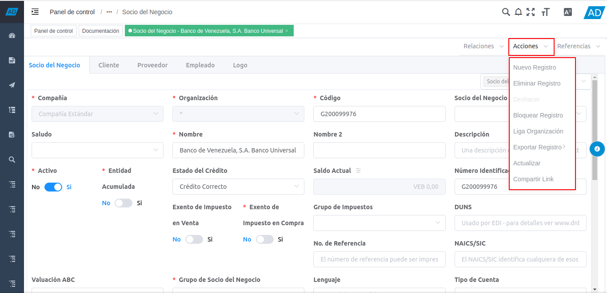

1.4. Menú de Contexto¶
La versión 4.0.0 de ADempiere, cuenta con un menú de contexto, el cual contiene tres (3) opciones que a su vez contienen diferentes opciones, según sea el proceso, reporte, smart browser o ventana en la que se encuentre realizando determinadas funciones. A continuación se define el menú de contexto de ADempiere y su operatividad.
Imagen 1. Barra de Herramientas de ADempiere en Ventana Estándar

1.4.1. Relaciones¶
Dentro de la opción “Relaciones”, se encuentran las diferentes ventanas, reportes, procesos y smart browser que tienen relación con la ventana, reporte, proceso o smart browser en el que se encuentra posicionado. Al seleccionar cualquiera de las opciones presentadas dentro de la opción “Relaciones”, ADempiere abre la ventana, reporte, proceso o smart browser correspondiente a dicha opción.
Imagen 2. Opción Relaciones

1.4.2. Acciones¶
Dentro de la opción “Acciones”, se pueden visualizar las posibles opciones a aplicar al documento en el que se encuentra posicionado y se ejecutan al seleccionar cualquiera de ellas.

Imagen 3. Opción Acciones
1.4.3. Referencias¶
Dentro de la opción “Referencias”, se pueden visualizar los diferentes documentos donde es utilizado el documento o registro en el que se encuentra posicionado. Al seleccionar cualquiera de las opciones presentadas dentro de la opción “Referencias”, ADempiere abre la ventana correspondiente a la opción, ubica y acerca el registro en el cual es utilizado el documento.
Imagen 4. Opción Referencias